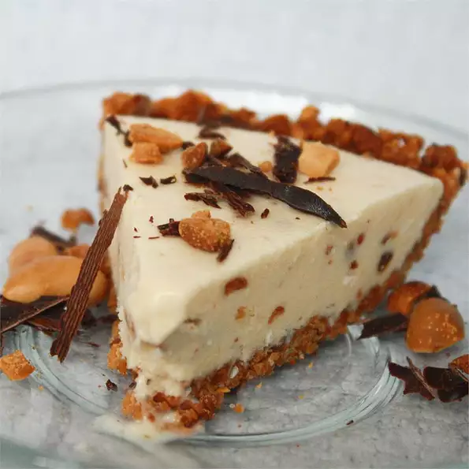

Home
Peanutty Ice-Cream Pie

Description
A great party pie! Top with M&Ms®, sprinkles, toasted coconut, or chocolate shavings before serving.
Ingredients
- 1 cup finely chopped peanuts
- 2 tablespoon white sugar
- 1/4 cup peanut butter
- ...
Steps
- Combine the peanuts, butter and sugar; press onto the bottom and up the sides of a greased 9-inch pie plate. Cover and refrigerate for 15 minutes.
- In a large bowl, combine peanut butter and corn syrup. Add coconut and peanuts. Stir in ice cream just until combined. Spoon into crust.
- Cover and freeze overnight or until firm. Just before serving, sprinkle with mini candy-coated chocolate pieces, if desired.